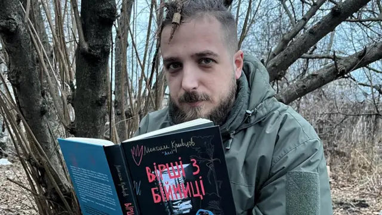

Максим Кривцов - Поет
Війна загострює відчуття й усвідомлення. Вірші про війну наче кулі — вражають смертельно глибоко й залишаються в серці назавжди. Це точки перетину тих, хто на передовій, і тих, хто в тилу. Це містки для розуміння один одного. Твори Максима Кривцова вражають чесністю, красою, щирістю та тією філософією, яка назавжди змінить ваше сприйняття світу навколо себе.
Перша і єдина поетична збірка Максима Кривцова «Вірші з бійниці» була розпродана вже через кілька годин після того, як з’явилася новина про його смерть. Крім віршів, там зібрані й світлини, які зробив Максим як фотограф.
- 
Ще є книга «На мінному полі пам'яті. Щоденники, есеї, оповідання» — це фіксація миттєвостей життя Максима Кривцова. Починаючи від його служби в складі Правого сектору, Максим почав записувати свої думки й спостереження, які в цьому виданні упорядкував його друг і побратим Валерій Пузік. У виданні, крім щоденникових записів, ви також знайдете оповідання й вірші Максима, а також його записи в період демобілізації. Книжка містить плівкові світлини.
Один із своїх віршів Максим присвятив своєму рудому котові, разом з яким він загинув:
-
Коли він засинає
повільно витягує передні лапки
йому сниться літо
сниться цілий цегляний будинок
сняться кури
які бігають по подвірʼю
сняться діти
які частують пиріжками з мʼясом
в мене з рук випадково скочується шолом
падає на багнюку
кіт прокидається
прижмурює очі
уважно роздивляється навколо
свої:
засинає.
.webp)